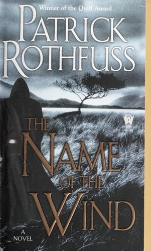
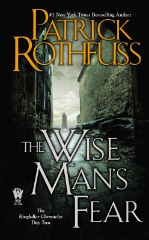
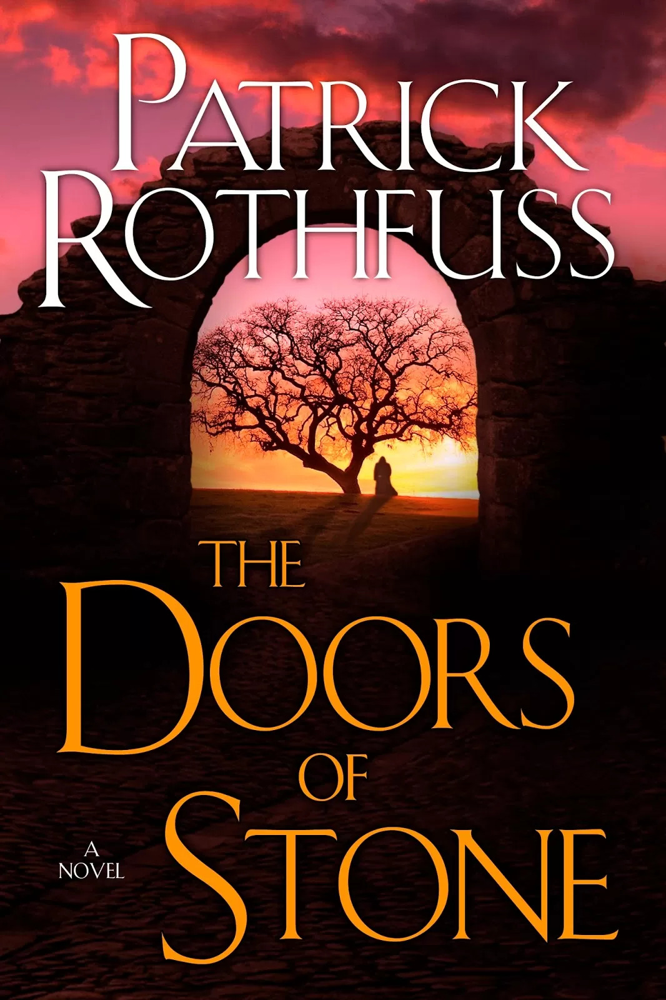

El Nom del Vent
Primer llibre de la saga. Explica la infància de Kvothe, la tragèdia que marca la seva vida i la seva arribada a la Universitat.
Publicat l'any 2007.
La Crònica de l'Assassí de Reis és una saga de fantasia escrita per Patrick Rothfuss que narra la vida de Kvothe, un personatge extraordinari conegut per les seves habilitats com a músic, aventurer, arcanista i narrador. La història és explicada pel mateix protagonista anys després dels fets, mentre viu ocult sota una identitat falsa en una petita fonda. Al llarg de tres dies, Kvothe relata la seva vida a un cronista, mostrant la diferència entre l'home que és i la llegenda en què s'ha convertit.
El primer llibre, El Nom del Vent, narra la infància de Kvothe, la tragèdia que canvia la seva vida i la seva arribada a la Universitat, el centre de coneixement més prestigiós del món conegut. Durant aquesta etapa, el protagonista descobreix la màgia de la simpatia, una forma d'arcanisme basada en la connexió entre objectes, i comença la seva recerca dels misteriosos Chandrian, figures envoltades de llegenda i temor.
El segon volum, El Temor d'un Home Savi, amplia considerablement l'univers de la saga. Kvothe abandona temporalment la Universitat per viatjar a noves terres, conèixer cultures diferents i viure experiències que contribueixen a la seva transformació en una figura llegendària. També aprofundeix en les arts marcials ademes, els secrets de les antigues històries i alguns dels enigmes més importants del món creat per Rothfuss.
Una de les característiques més originals de l'obra és el tractament de la màgia. A més de la simpatia, la saga introdueix la nominació, l'art de conèixer el nom veritable de les coses per comprendre-les i influir sobre elles. La combinació de música, llegendes, màgia, misteri i una narrativa extraordinàriament cuidada fa que molts lectors considerin aquesta saga una de les obres de fantasia més influents i admirades del segle XXI.

Primer llibre de la saga. Explica la infància de Kvothe, la tragèdia que marca la seva vida i la seva arribada a la Universitat.
Publicat l'any 2007.

Segona part de la història. Kvothe amplia els seus coneixements, viatja a terres llunyanes i s'endinsa en alguns dels grans misteris del seu món.
Publicat l'any 2011.

Tercer volum de la trilogia, encara pendent de publicació. Està destinat a concloure la història de Kvothe i resoldre molts dels enigmes plantejats als llibres anteriors.
Una de les novel·les més esperades pels lectors de fantasia moderna.
Kvothe és el protagonista de la saga. Destaca pel seu talent excepcional per a la música, la seva intel·ligència i la seva habilitat per a l'arcanisme. Al llarg de la història intenta descobrir la veritat sobre els Chandrian i els fets que van marcar tràgicament la seva infància.
Denna és un dels personatges més enigmàtics de la saga. Manté una relació complexa amb Kvothe i apareix repetidament al llarg del seu viatge, convertint-se en una de les figures més importants de la seva vida. El seu passat i les seves motivacions són una font constant de misteri.
Bast és el deixeble i amic de Kvothe durant els esdeveniments que tenen lloc a la fonda Roca de Guia. Malgrat la seva aparença amable, amaga una naturalesa misteriosa i sovint intenta influir en els esdeveniments perquè Kvothe recuperi la grandesa que havia perdut.
Elodin és un dels professors més singulars de la Universitat i un expert en la Nominació. El seu comportament aparentment excèntric amaga un profund coneixement sobre els noms veritables de les coses i els secrets més antics de la màgia.
Els Chandrian són un grup misteriós envoltat de llegendes i supersticions. Són temuts arreu del món i la seva aparició està relacionada amb desgràcies i destrucció. La recerca de la veritat sobre ells és una de les principals motivacions de Kvothe al llarg de la saga.